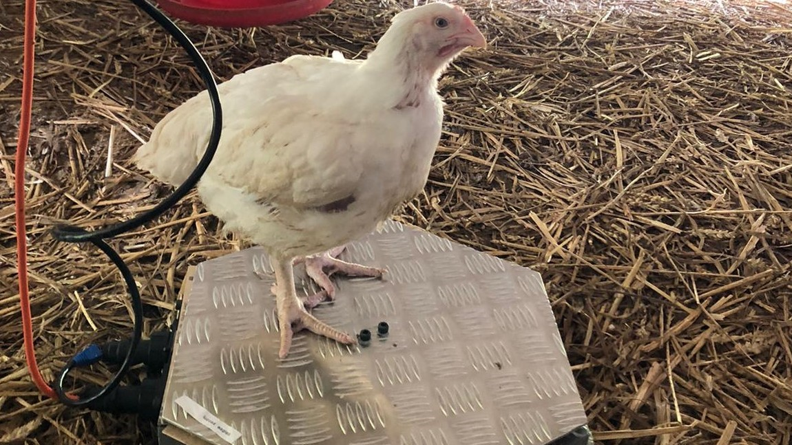

In this project I worked with a team of 6 to develop a smart weighing scale prototype for the JAPFA Comfeed Company.
The JAPFA smart scale project started after an Imperial mechanical engineering student held an internship with the JAPFA Comfeed Company in Myanmar. He had the opportunity to look at one of their chicken farms and identify potential improvements. After his visit he pitched to JAPFA’s head of Myanmar and head of poultry his idea of developing a ‘smart weighing scale’. The goal of the scale is to continuously measure chicken weights, estimate the coop’s average weight, and report this data wirelessly to the farm manager. This weight can then be used by the farm manager to monitor the rate of chicken growth and assess their health. When he returned to Imperial he developed a team of 6 Imperial and UCL students to develop a prototype.
I initially made the decisions for selecting hardware for both weight measurement and Wi-Fi connectivity, and I later helped with developing the firmware and data processing code. Our initial goal was to test the scale for two months in Myanmar and thus we wanted features to allow us to alter the software remotely. Moreover, the farm has poor internet connectivity and temporary blackouts and thus we had to design a system which can navigate both of these issues. Unfortunately, due to COVID we had to delay our prototype tests in Myanmar for a later date. However, we had the opportunity to test the scales in local Irish farms. The scales have successfully measured and reported weight data.